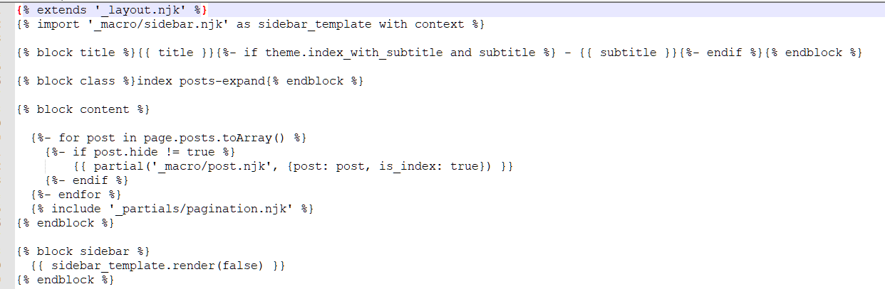

最新HEXO博客NEXT主题隐藏文章方法
其实方法很简单，打开主题首页对应的文件，添加一个判断即可
打开文件 \themes\next\layout\index.njk文件，大概在11行把
1 | {{ partial('_macro/post.njk', {post: post, is_index: true}) }} |
替换为以下代码即可
1 | {%- if post.hide != true %} |
如图

然后在post文章头中加入 hide:true即可实现首页文章隐藏，true为隐藏false或者不写则为显示
建议直接在 /scaffolds/post.md中直接添加 hide:false，即可实现新建文章自动添加
在分类或者标签中实现隐藏也是同理